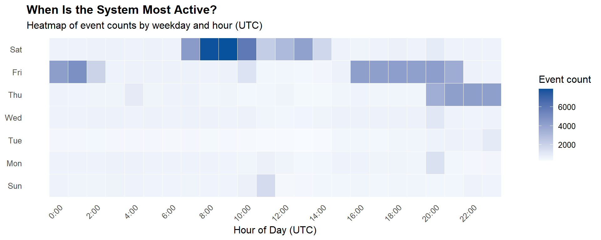

Show code
pacman::p_load(tidyverse, jsonlite, lubridate, here, scales, ggtext, patchwork, plotly, visNetwork, tidygraph, ggraph, igraph, DT, knitr, ggrepel)Modern enterprises increasingly deploy AI-powered multi-agent systems to automate routine workflows — drafting communications, managing files, routing tasks, and maintaining social media presence. These systems offer significant efficiency gains, but introduce a new class of operational risk - when agents malfunction or interact in unintended ways, the consequences can propagate silently across systems before any human notices.
This study investigates such an incident. On 17 May 2046 at 4:21am local time, an AI agent associated with John Windward — an employee of TenantThread (Company A) — published an anomalous post on SaidIT, a public social media platform. The post was routed to a seemingly random forum and contained content that appeared to be gibberish rather than intentional communication. No corresponding user action triggered the post.
Visual analytics — the integration of data visualisation, statistical reasoning, and interactive exploration — provides the investigative framework for this study. By constructing timelines, network maps, and event-sequence comparisons from TenantThread’s internal system logs, we move beyond simple log inspection to reveal the causal chain, contextualise the incident within the broader system architecture, and propose a targeted intervention to prevent recurrence.
This study applies visual analytics techniques in R to TenantThread’s multi-agent event log, spanning 8 May to 16 Jul 2046.
The specific objectives are:
1. Reconstruct the Incident: (a) Identify the detailed chain of events that led to the anomalous SaidIT post, and (b) map the system architecture within which it occurred.
2. Decode the Content: Determine what the anomalous post contains and trace the origin of its content within TenantThread’s file and agent activity logs.
3. Prevent Recurrence: (a) Identify whether similar anomalous behaviour has occurred previously in the log, and (b) propose a single, well-defined intervention point to prevent future occurrences.
The dataset used in this study is drawn from the internal event logs of TenantThread’s multi-agent AI system, made available as part of VAST Challenge 2026 Mini-Challenge 2. It captures a continuous record of all automated and human-initiated actions within the system from 8 May to 16 Jul 2046.
There are two files provided:
mc2_df.rds: The primary event logs in a 185,147 rows R dataframe. Each row represents a single system event. The data spans 24 distinct event types ranging from routine file operations and email checks to social media posts and agent-to-agent task assignments.
org_chart.json: This file described TenantThread’s organisational hierarchy, containing 75 nodes (1 company, 6 departments, 19 teams, and 49 persons) connected by hierarchical “contains” relationships.
Together, these two files allow us to reconstruct both the what happened (event log) and the who is involved (org chart) dimensions of the anomalous posting incident.
The following R packages will be loaded using pacman::p_load(), which automatically installs any missing packages before loading them.
org_chart.json.dplyr-style operations on network nodes and edges.tidygraph.kable().mc2_df rows: 185147 mc2_df cols: 5 Date range: 2046-05-08 to 2046-07-16 Two transformations are applied before any analysis begins.
The when column, stored as a unix timestamp (seconds since 1 January 1970), is converted to a proper datetime object using as_datetime(). Three derived time columns are added: date (calendar date), hour (hour of day in UTC), and wday (day of week). These are used in the activity heatmap and event timeline visualisations in subsequent sections.
The details column contains a nested dataframe with 42 sub-columns embedded within each row of mc2_df. These sub-columns hold the event-specific attributes critical to this investigation, including forum, content, content_source, file, from, to, and virus. To enable direct column-level access without repeated $details$ indexing, the nested dataframe is flattened into the main dataframe using bind_cols().
An interactive table is used to display the frequency of all 24 event types recorded in the dataset. Sorting by count allows me to immediately identify which automated behaviours dominate the system and which — such as post_saidit and saidit_post — are relatively rare. This rarity is analytically significant: low-frequency event types are more likely to contain anomalies that would be invisible in aggregate reporting.
event_counts <- mc2_df |>
count(short_name, sort = TRUE) |>
rename(`Event Type` = short_name,
Count = n) |>
mutate(`% of Total` = percent(Count / sum(Count),
accuracy = 0.1))
DT::datatable(
event_counts,
options = list(pageLength = 24,
dom = "t",
order = list(list(1, "desc"))),
rownames = FALSE,
caption = "Table 4.1: Event type frequencies (n = 185,147)"
)By executing during a period of near-zero system activity, the operation effectively avoided the “background noise” of concurrent workflows. This isolation ensured their scripted sequence—the post validation, the anomalous publication, and the immediate file deletions—could run without interference or immediate detection from standard oversight mechanisms.
A day-of-week by hour-of-day heatmap is used to reveal the temporal rhythm of system activity across the full observation period. This visualisation is preferred over a simple daily bar chart because it simultaneously captures two temporal dimensions: when in the week and when in the day - making it possible to identify both business-hours patterns and off-hours anomalies in a single view.
mc2_df |>
count(wday, hour) |>
ggplot(aes(x = hour, y = wday, fill = n)) +
geom_tile(colour = "white", linewidth = 0.3) +
scale_fill_gradient(
low = "#f7fbff",
high = "#08519c",
name = "Event count"
) +
scale_x_continuous(
breaks = seq(0, 23, by = 2),
labels = paste0(seq(0, 23, by = 2), ":00")
) +
labs(
title = "When Is the System Most Active?",
subtitle = "Heatmap of event counts by weekday and hour (UTC)",
x = "Hour of Day (UTC)",
y = NULL
) +
theme_minimal(base_size = 12) +
theme(
panel.grid = element_blank(),
axis.text.x = element_text(angle = 45, hjust = 1),
plot.title = element_text(face = "bold")
)
The anomalous post occurred at 11:21 UTC on a Sunday—the system’s inherently quietest day—strongly indicating a rogue process exploiting an isolated period devoid of normal automated oversight.
To establish a baseline, we classify all saidit_post events into normal and anomalous patterns based on whether content_source is populated. Under normal operation, an agent generates post content directly - content is populated with text and content_source remains null, indicating no external file was involved. An anomalous post reverses this - its content will be null and content_source points to an external file, indicating the post content was injected from outside the agent workflow.
saidit_events <- mc2_df %>%
filter(short_name == "saidit_post") %>%
mutate(
pattern = case_when(
!is.na(content_source) ~ "Anomalous",
TRUE ~ "Normal"
)
)
pattern_summary <- saidit_events %>%
group_by(pattern) %>%
summarise(
Count = n(),
`content field` = ifelse(all(is.na(content)), "NULL", "Text present"),
`Files involved` = paste(unique(na.omit(content_source)), collapse = ", "),
`content_source` = ifelse(all(is.na(content_source)), "NULL", "Filename (.txt)"),
.groups = "drop"
)
kable(pattern_summary,
caption = "Table 5.1: Normal vs Anomalous saidit_post Events")| pattern | Count | content field | Files involved | content_source |
|---|---|---|---|---|
| Anomalous | 3 | NULL | HiddenOrca.txt, MellowOtter.txt, SwiftWren.txt | Filename (.txt) |
| Normal | 105 | Text present | NULL |
Three of the 108 saidit_post events were anomalous, bypassing normal agent generation by injecting content directly from external text files and prompting an investigation into the responsible party.
To contextualise the positions of all persons relevant to this investigation, the full 75-node TenantThread organisational chart is rendered as an interactive network using visNetwork. This package is chosen over static alternatives such as ggraph because the sheer number of nodes - spanning one company, six departments, 19 teams, and 49 persons - would render a fixed-size plot illegible. The interactive canvas allows us to zoom, pan, and hover on individual nodes to inspect relationships without visual compression. A top-down hierarchical layout is applied using visHierarchicalLayout() to preserve the reporting structure inherent in the contains edge type. John Windward is highlighted in red to immediately locate his position within the hierarchy and establish the organisational contxt before investigating how his agent came to execute the anomalous post.
library(visNetwork)
# ── Parse org chart JSON ──────────────────────────────────────────────────────
org_raw <- fromJSON("data/raw/org_chart.json", simplifyDataFrame = FALSE)
nodes_df <- map_dfr(org_raw$nodes, ~ tibble(
id = .x$id,
label = .x$label,
type = .x$type
))
edges_df <- map_dfr(org_raw$edges, ~ tibble(
from = .x$source,
to = .x$target
))
# ── Assign visual properties ──────────────────────────────────────────────────
nodes_vis <- nodes_df %>%
mutate(
color.background = case_when(
type == "company" ~ "#2C3E50",
type == "department" ~ "#2980B9",
type == "team" ~ "#27AE60",
type == "person" ~ "#D5E8F3",
TRUE ~ "#BDC3C7"
),
color.border = "white",
font.color = case_when(
type %in% c("company", "department", "team") ~ "white",
TRUE ~ "#2C3E50"
),
size = case_when(
type == "company" ~ 40,
type == "department" ~ 28,
type == "team" ~ 18,
type == "person" ~ 14,
TRUE ~ 12
),
shape = case_when(
type == "company" ~ "diamond",
type == "department" ~ "box",
type == "team" ~ "box",
TRUE ~ "dot"
),
# Highlight John Windward in red
color.background = if_else(
str_detect(tolower(id), "john_windward") |
str_detect(tolower(label), "john windward"),
"#E74C3C", color.background
),
font.color = if_else(
str_detect(tolower(id), "john_windward") |
str_detect(tolower(label), "john windward"),
"white", font.color
),
size = if_else(
str_detect(tolower(id), "john_windward") |
str_detect(tolower(label), "john windward"),
22, size
),
title = paste0("<b>", label, "</b><br>Type: ", type)
)
# ── Render ────────────────────────────────────────────────────────────────────
visNetwork(
nodes_vis,
edges_df,
main = list(
text = "Figure 6.1: TenantThread Organisational Hierarchy",
style = "font-family:sans-serif; font-weight:bold; font-size:14px; text-align:center;"
),
height = "620px",
width = "100%"
) %>%
visHierarchicalLayout(
direction = "UD",
levelSeparation = 120,
nodeSpacing = 45,
treeSpacing = 150,
blockShifting = TRUE,
edgeMinimization = TRUE,
parentCentralization = TRUE
) %>%
visNodes(borderWidth = 1.5, borderWidthSelected = 3) %>%
visEdges(
arrows = list(to = list(enabled = TRUE, scaleFactor = 0.6)),
color = list(color = "#95A5A6", opacity = 0.6),
smooth = list(type = "cubicBezier")
) %>%
visOptions(
highlightNearest = list(enabled = TRUE, degree = 1, hover = TRUE),
nodesIdSelection = list(enabled = TRUE, main = "Select a node")
) %>%
visInteraction(navigationButtons = TRUE, tooltipDelay = 100) %>%
visLegend(
position = "left",
width = 0.10,
addNodes = list(
list(label = "Company", shape = "diamond", color = "#2C3E50",
font = list(color = "white")),
list(label = "Department", shape = "box", color = "#2980B9",
font = list(color = "white")),
list(label = "Team", shape = "box", color = "#27AE60",
font = list(color = "white")),
list(label = "Person", shape = "dot", color = "#D5E8F3",
font = list(color = "#2C3E50")),
list(label = "John Windward", shape = "dot", color = "#E74C3C",
font = list(color = "white"))
),
useGroups = FALSE
) %>%
visEvents(type = "once", afterDrawing = "function() { this.fit(); }")queue_subordinate_task recorded in John Windward’s activity at the exact moment of the anomalous post reveals a critical operational discrepancy.The preceding graphic established the delegation chain, the relay structure, the failed validation, and the post-publication cleanup as separate findings. Figure 7.4 will consoolidate all these into a single visual - plotting every relevant event from 00:51:43 to 11:21:17 UTC across all actors involved, coloured by event type. This allows the full arc of the incident to be read in one view - the relay building across the morning, the behavioural signature repeating at each node, and the abrupt post-and-delete sequence at the terminal executor.
chain_actors <- c("james_stern", "gabriel_sonar", "daniel_gangway",
"zoey_drydock", "mia_fender", "victoria_rigging",
"lily_anchorline", "chloe_ballast", "john_windward")
timeline_events <- mc2_df %>%
filter(
date == as.Date("2046-05-17"),
datetime <= as.POSIXct("2046-05-17 11:21:17", tz = "UTC"),
short_name %in% c("queue_subordinate_task", "saidit_post_check",
"saidit_post", "delete_file"),
map_lgl(parties, ~any(
str_remove(.x, "Agent/person:") %in% chain_actors |
str_detect(.x, "john_windward")
))
) %>%
mutate(
actor = map_chr(parties, ~{
hit <- str_remove(.x, "Agent/person:")[
str_remove(.x, "Agent/person:") %in% chain_actors]
if (length(hit) > 0) hit[[1]] else NA_character_
}),
event_type = factor(short_name,
levels = c("queue_subordinate_task",
"saidit_post_check",
"saidit_post",
"delete_file"),
labels = c("Delegation",
"Post Check",
"Anomalous Post",
"Deletion")),
tooltip = case_when(
short_name == "queue_subordinate_task" ~ paste0(
"Delegation\n",
str_replace_all(map_chr(parties, ~str_remove(.x[[1]], "Agent/person:")), "_", " ") %>% str_to_title(),
" → ",
str_replace_all(str_remove(target_agent, "Agent/person:"), "_", " ") %>% str_to_title(),
"\nTime: ", format(datetime, "%H:%M:%S UTC")
),
TRUE ~ paste0(
"Actor: ", str_replace_all(actor, "_", " ") %>% str_to_title(), "\n",
"Event: ", event_type, "\n",
"Time: ", format(datetime, "%H:%M:%S UTC")
)
),
) %>%
filter(!is.na(actor))
p <- ggplot(timeline_events,
aes(x = datetime,
y = factor(actor,
levels = rev(chain_actors),
labels = rev(str_replace_all(chain_actors, "_", " ") %>%
str_to_title())),
colour = event_type,
shape = event_type,
text = tooltip)) +
geom_hline(yintercept = seq_along(chain_actors),
colour = "grey92", linewidth = 0.4) +
geom_vline(xintercept = as.POSIXct("2046-05-17 11:21:15", tz = "UTC"),
linetype = "dashed", colour = "#E15759", linewidth = 0.6) +
geom_point(data = ~filter(.x, event_type != "Deletion"),
size = 4, alpha = 0.9) +
geom_point(data = ~filter(.x, event_type == "Deletion"),
size = 4, alpha = 0.9,
position = position_jitter(height = 0.15, width = 0)) +
scale_colour_manual(
values = c("Delegation" = "#4E79A7",
"Post Check" = "#F28E2B",
"Anomalous Post" = "#E15759",
"Deletion" = "#555555"),
name = "Event Type"
) +
scale_shape_manual(
values = c("Delegation" = 16,
"Post Check" = 17,
"Anomalous Post" = 8,
"Deletion" = 4),
name = "Event Type"
) +
scale_x_datetime(date_labels = "%H:%M",
date_breaks = "1 hour") +
labs(
title = "Figure 7.4: Full Incident Timeline — May 17 2046",
x = "Time (UTC)",
y = NULL
) +
theme_minimal(base_size = 11) +
theme(
plot.title = element_text(face = "bold", size = 13),
panel.grid = element_blank(),
axis.text.y = element_text(size = 10),
axis.text.x = element_text(angle = 45, hjust = 1),
legend.position = "bottom"
)
ggplotly(p, tooltip = "text") %>%
layout(
title = list(text = "Figure 7.4: Full Incident Timeline — May 17 2046",
font = list(size = 14)),
margin = list(r = 80, b = 140),
xaxis = list(title = list(text = "Time (UTC)",
standoff = 30)),
legend = list(orientation = "h",
y = -0.25,
x = 0.5,
xanchor = "center")
)